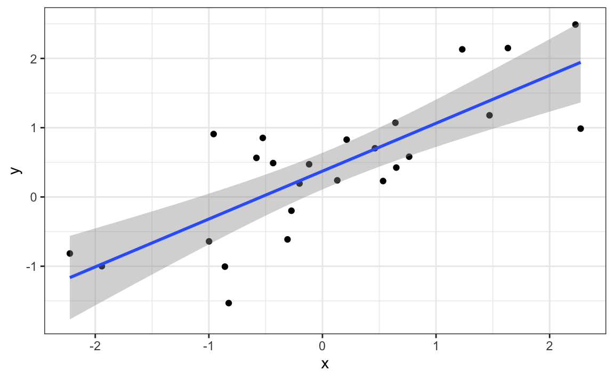

Capítulo 19 La asociación no es causalidad
La asociación no es causalidad es quizás la lección más importante que uno aprende en una clase de estadística. La correlación no es causalidad es otra forma de decir esto. A lo largo de la parte de Estadísticas del libro, hemos descrito herramientas útiles para cuantificar asociaciones entre variables. Sin embargo, debemos tener cuidado de no interpretar en exceso estas asociaciones.
Hay muchas razones por las que una variable \(X\) puede correlacionarse con una variable \(Y\) sin tener ningún efecto directo sobre \(Y\). Aquí examinamos cuatro formas comunes que pueden conducir a malinterpretar los datos.
19.1 Correlación espuria
El siguiente ejemplo cómico subraya que la correlación no es causalidad. Muestra una correlación muy fuerte entre las tasas de divorcio y el consumo de margarina.

¿Significa esto que la margarina causa divorcios? ¿O los divorcios hacen que las personas coman más margarina? Por supuesto, la respuesta a ambas preguntas es no. Esto es solo un ejemplo de lo que llamamos una correlación espuria.
Puedes ver muchos más ejemplos absurdos en el sitio web de Correlaciones espurias75.
Los casos presentados en el sitio de correlación espuria son todas instancias de lo que generalmente se llama data dragado, data fishing_o_data snooping. Básicamente es una forma de lo que en los EE. UU. Llaman cerry picking. Un ejemplo de dragado de datos sería si observa muchos resultados producidos por un proceso aleatorio y elige el que muestra una relación que respalda una teoría que desea defender.
Se puede usar una simulación de Monte Carlo para mostrar cómo el dragado de datos puede dar como resultado encontrar altas correlaciones entre variables no correlacionadas. Guardaremos los resultados de nuestra simulación en un tibble:
N <- 25
g <- 1000000
sim_data <- tibble(group = rep(1:g, each=N),
x = rnorm(N * g),
y = rnorm(N * g))La primera columna denota grupo. Creamos grupos y para cada uno generamos un par de vectores independientes, \(X\) y \(Y\), con 25 observaciones cada una, almacenadas en la segunda y tercera columnas. Debido a que construimos la simulación, sabemos que \(X\) y \(Y\) no están correlacionados
A continuación, calculamos la correlación entre X y Y para cada grupo y mira el máximo:
res <- sim_data %>%
group_by(group) %>%
summarize(r = cor(x, y)) %>%
arrange(desc(r))
res
#> # A tibble: 1,000,000 x 2
#> group r
#> <int> <dbl>
#> 1 992040 0.790
#> 2 805031 0.773
#> 3 231086 0.767
#> 4 529954 0.765
#> 5 178906 0.761
#> # … with 999,995 more rowsVemos una correlación máxima de 0.79 and if you just plot the data from the group achieving this correlation, it shows a convincing plot that $ X $ and $ Y $ de hecho están correlacionados:
sim_data %>% filter(group == res$group[which.max(res$r)]) %>%
ggplot(aes(x, y)) +
geom_point() +
geom_smooth(method = "lm")
#> `geom_smooth()` using formula 'y ~ x'
Recuerde que el resumen de correlación es una variable aleatoria. Aquí está la distribución generada por la simulación de Monte Carlo:

Es solo un hecho matemático que si observamos correlaciones aleatorias que se espera que sean 0, pero tienen un error estándar de 0.204, el más grande estará cerca de 1.
Si realizamos una regresión en este grupo e interpretemos el valor p, afirmaríamos incorrectamente que esta es una relación estadísticamente significativa:
library(broom)
sim_data %>%
filter(group == res$group[which.max(res$r)]) %>%
do(tidy(lm(y ~ x, data = .))) %>%
filter(term == "x")
#> # A tibble: 1 x 5
#> term estimate std.error statistic p.value
#> <chr> <dbl> <dbl> <dbl> <dbl>
#> 1 x 0.888 0.144 6.18 0.00000263Esta forma particular de dragado de datos se conoce como p-hacking. El hackeo P es un tema de mucha discusión porque es un problema en publicaciones científicas. Debido a que los editores tienden a recompensar los resultados estadísticamente significativos sobre los resultados negativos, existe un incentivo para informar resultados significativos. En epidemiología y ciencias sociales, por ejemplo, los investigadores pueden buscar asociaciones entre un resultado adverso y varias exposiciones e informar solo la exposición que resultó en un valor p pequeño. Además, podrían intentar ajustar varios modelos diferentes para tener en cuenta la confusión y elegir el que arroje el valor p más pequeño. En disciplinas experimentales, un experimento puede repetirse más de una vez, pero solo se informan los resultados del experimento con un valor p pequeño. Esto no sucede necesariamente debido a un comportamiento poco ético, sino más bien como resultado de la ignorancia estadística o la ilusión. En los cursos de estadística avanzada, puede aprender métodos para ajustarse a estas comparaciones múltiples.
19.2 Valores atípicos
Supongamos que tomamos medidas de dos resultados independientes, \(X\) y \(Y\), y estandarizamos las medidas. Sin embargo, imagine que cometemos un error y olvidamos estandarizar la entrada 23. Podemos simular dichos datos usando:
set.seed(1985)
x <- rnorm(100,100,1)
y <- rnorm(100,84,1)
x[-23] <- scale(x[-23])
y[-23] <- scale(y[-23])Los datos se ven así:

No es sorprendente que la correlación sea muy alta:
Pero esto es impulsado por el caso atípico. Si eliminamos este valor atípico, la correlación se reduce considerablemente a casi 0, que es lo que debería ser:
En la sección 11 describimos alternativas a la desviación promedio y estándar que son robustas para los valores atípicos. También hay una alternativa a la correlación muestral para estimar la correlación poblacional que es robusta para los valores atípicos. Se llama Spearman correlation. La idea es simple: calcular la correlación en los rangos de los valores. Aquí hay un diagrama de los rangos trazados uno contra el otro:

El valor atípico ya no está asociado con un valor muy grande y la correlación se reduce:
La correlación de Spearman también se puede calcular así:
También hay métodos para el ajuste robusto de modelos lineales que puede aprender, por ejemplo, en este libro: Robust Statistics: Edition 2 por Peter J. Huber y Elvezio M. Ronchetti.
19.3 Inversión de causa y efecto
Otra forma en que la asociación se confunde con la causalidad es cuando la causa y el efecto se invierten. Un ejemplo de esto es afirmar que la tutoría hace que los estudiantes rindan peor porque evalúan más bajo que sus compañeros que no reciben tutoría. En este caso, la tutoría no está causando los bajos puntajes de las pruebas, sino al revés.
Una forma de este reclamo en realidad se convirtió en un artículo de opinión en el New York Times titulado La participación de los padres está sobrevalorada76 Considere esta cita del artículo:
Cuando examinamos si la ayuda regular con la tarea tuvo un impacto positivo en el rendimiento académico de los niños, nos sorprendió lo que encontramos. Independientemente de la clase social de la familia, el origen racial o étnico, o el nivel de grado de un niño, la tarea consistente casi nunca mejoró los puntajes de las pruebas o las calificaciones … Incluso más sorprendente para nosotros fue que cuando los padres ayudaban regularmente con la tarea, los niños generalmente se desempeñaban peor.
Una posibilidad muy probable es que los niños que necesitan ayuda regular de sus padres reciban esta ayuda porque no se desempeñan bien en la escuela.
Podemos construir fácilmente un ejemplo de inversión de causa y efecto utilizando los datos de altura de padre e hijo. Si nos ajustamos al modelo:
\[X_i = \beta_0 + \beta_1 y_i + \varepsilon_i, i=1, \dots, N\]
a los datos de altura de padre e hijo, con \(X_i\) la altura del padre y \(y_i\) la altura del hijo, obtenemos un resultado estadísticamente significativo:
library(HistData)
data("GaltonFamilies")
GaltonFamilies %>%
filter(childNum == 1 & gender == "male") %>%
select(father, childHeight) %>%
rename(son = childHeight) %>%
do(tidy(lm(father ~ son, data = .)))
#> # A tibble: 2 x 5
#> term estimate std.error statistic p.value
#> <chr> <dbl> <dbl> <dbl> <dbl>
#> 1 (Intercept) 34.0 4.57 7.44 4.31e-12
#> 2 son 0.499 0.0648 7.70 9.47e-13El modelo se ajusta muy bien a los datos. Si observamos la formulación matemática del modelo anterior, podría interpretarse fácilmente de manera incorrecta para sugerir que el hijo que es alto hace que el padre sea alto. Pero dado lo que sabemos sobre genética y biología, sabemos que es al revés. El modelo es técnicamente correcto. Las estimaciones y los valores p también se obtuvieron correctamente. Lo que está mal aquí es la interpretación.
19.4 Confusores
Los factores de confusión son quizás la razón más común que lleva a que las asociaciones comiencen a malinterpretarse.
Si \(X\) y \(Y\) están correlacionados, llamamos \(Z\) un conforador si hay cambios en \(Z\) provoca cambios en ambos \(X\) y \(Y\). Anteriormente, al estudiar los datos del béisbol, vimos cómo Home Runs fue un factor de confusión que resultó en una correlación más alta de lo esperado al estudiar la relación entre Bases on Balls y Runs. En algunos casos, podemos usar modelos lineales para dar cuenta de los factores de confusión. Sin embargo, este no es siempre el caso.
La interpretación incorrecta debido a los factores de confusión es omnipresente en la prensa laica y, a menudo, son difíciles de detectar. Aquí, presentamos un ejemplo ampliamente utilizado relacionado con las admisiones a la universidad.
19.4.1 Ejemplo: admisiones UC Berkeley
Los datos de admisión de seis carreras de UC Berkeley, de 1973, mostraron que se admitía a más hombres que mujeres: el 44% de los hombres ingresaron en comparación con el 30% de las mujeres. PJ Bickel, EA Hammel y JW O'Connell. Ciencia (1975). Podemos cargar los datos y una prueba estadística, que rechaza claramente la hipótesis de que el género y la admisión son independientes:
data(admissions)
admissions %>% group_by(gender) %>%
summarize(total_admitted = round(sum(admitted/ 100 * applicants)),
not_admitted = sum(applicants) - sum(total_admitted)) %>%
select(-gender) %>%
do(tidy(chisq.test(.))) %>% .$p.value
#> [1] 1.06e-21Pero una inspección más cercana muestra un resultado paradójico. Aquí están los porcentajes de admisión por especialidad:
admissions %>% select(major, gender, admitted) %>%
spread(gender, admitted) %>%
mutate(women_minus_men = women - men)
#> major men women women_minus_men
#> 1 A 62 82 20
#> 2 B 63 68 5
#> 3 C 37 34 -3
#> 4 D 33 35 2
#> 5 E 28 24 -4
#> 6 F 6 7 1Cuatro de los seis mayores favorecen a las mujeres. Más importante aún, todas las diferencias son mucho más pequeñas que la diferencia de 14.2 que vemos al examinar los totales.
La paradoja es que analizar los totales sugiere una dependencia entre admisión y género, pero cuando los datos se agrupan por mayor, esta dependencia parece desaparecer. ¿Que esta pasando? En realidad, esto puede suceder si un factor de confusión incontable está impulsando la mayor parte de la variabilidad.
Así que definamos tres variables: \(X\) es 1 para hombres y 0 para mujeres, \(Y\) es 1 para los admitidos y 0 en caso contrario, y \(Z\) cuantifica la selectividad del mayor. Una afirmación de sesgo de género se basaría en el hecho de que \(\mbox{Pr}(Y=1 | X = x)\) es mayor para \(x=1\) que \(x=0\). Sin embargo, \(Z\) es un factor de confusión importante a tener en cuenta. Claramente \(Z\) está asociado con \(Y\), cuanto más selectivo sea un mayor, menor \(\mbox{Pr}(Y=1 | Z = z)\). Pero es mayor selectividad \(Z\) asociado con el género \(X\)?
Una forma de ver esto es trazar el porcentaje total admitido en una especialización versus el porcentaje de mujeres que componen los solicitantes:
admissions %>%
group_by(major) %>%
summarize(major_selectivity = sum(admitted * applicants)/sum(applicants),
percent_women_applicants = sum(applicants * (gender=="women"))/
sum(applicants) * 100) %>%
ggplot(aes(major_selectivity, percent_women_applicants, label = major)) +
geom_text()
Parece haber asociación. La trama sugiere que las mujeres eran mucho más propensas a postularse a las dos especializaciones “difíciles”: el género y la selectividad de la especialidad están confundidos. Compare, por ejemplo, el B mayor y el E. mayor. El E mayor es mucho más difícil de ingresar que el B mayor y más del 60% de los solicitantes al E mayor eran mujeres, mientras que menos del 30% de los solicitantes del B mayor eran mujeres.
19.4.2 Confusión explicada gráficamente
La siguiente gráfica muestra el número de solicitantes que fueron admitidos y los que no lo fueron:

También desglosa las aceptaciones por mayor. Este desglose nos permite ver que la mayoría de los hombres aceptados provenían de dos especialidades: A y B. También nos permite ver que pocas mujeres solicitaron estas especializaciones.
19.4.3 Promedio después de estratificar
En esta gráfica, podemos ver que si condicionamos o estratificamos por mayor, y luego observamos las diferencias, controlamos el factor de confusión y este efecto desaparece:

Ahora vemos que mayor por mayor, no hay mucha diferencia. El tamaño del punto representa el número de solicitantes y explica la paradoja: vemos grandes puntos rojos y pequeños puntos azules para las mayores más fáciles, A y B.
Si promediamos la diferencia por mayor, encontramos que el porcentaje es en realidad 3.5% más alto para las mujeres.
19.5 La paradoja de Simpson
El caso que acabamos de cubrir es un ejemplo de la paradoja de Simpson. Se llama paradoja porque vemos el signo del cambio de correlación al comparar la publicación completa y estratos específicos. Como ejemplo ilustrativo, suponga que tiene tres variables aleatorias \(X\), \(Y\) y \(Z\) y que observamos realizaciones de estos. Aquí hay una gráfica de observaciones simuladas para \(X\) y \(Y\) junto con la correlación de muestra:

Puedes ver eso \(X\) y \(Y\) están correlacionados negativamente Sin embargo, una vez que nos estratifiquemos por \(Z\) (se muestra en diferentes colores a continuación) surge otro patrón:

Es realmente \(Z\) eso está negativamente correlacionado con \(X\). Si nos estratificamos por \(Z\), el \(X\) y \(Y\) en realidad están positivamente correlacionados como se ve en la gráfica anterior.
19.6 Ejercicios
Para el próximo conjunto de ejercicios, examinamos los datos de un documento PNAS 201477 que analizó las tasas de éxito de las agencias de financiación en los Países Bajos y concluyó :
Nuestros resultados revelan un sesgo de género que favorece a los postulantes masculinos sobre los postulantes femeninos en la priorización de sus evaluaciones y tasas de éxito de “calidad de investigador” (pero no “calidad de propuesta”), así como en el lenguaje utilizado en los materiales de instrucción y evaluación.
Unos meses después, se publicó una respuesta78 titulada No hay evidencia de que el género contribuya al éxito de la financiación de la investigación personal en los Países Bajos: una reacción a Van der Lee y Ellemers que concluyeron:
Sin embargo, el efecto general de género limita con la significación estadística, a pesar de la gran muestra. Además, su conclusión podría ser un excelente ejemplo de la paradoja de Simpson; Si un mayor porcentaje de mujeres solicita subvenciones en disciplinas científicas más competitivas (es decir, con bajas tasas de éxito de solicitudes tanto para hombres como para mujeres), entonces un análisis en todas las disciplinas podría mostrar incorrectamente “evidencia” de desigualdad de género.
¿Quién está aquí? ¿El artículo original o la respuesta? Aquí, examinará los datos y llegará a su propia conclusión.
1. La evidencia principal para la conclusión del artículo original se reduce a una comparación de los porcentajes. La Tabla S1 en el documento incluye la información que necesitamos:
Construya la tabla de dos por dos utilizada para la conclusión sobre las diferencias en los premios por género.
2. Calcule la diferencia en porcentaje de la tabla de dos por dos.
3. En el ejercicio anterior, notamos que la tasa de éxito es menor para las mujeres. ¿Pero es significativo? Calcule un valor p usando una prueba de Chi-cuadrado.
4. Vemos que el valor p es de aproximadamente 0.05. Entonces parece haber alguna evidencia de una asociación. ¿Pero podemos inferir causalidad aquí? ¿El sesgo de género está causando esta diferencia observada? La respuesta al documento original afirma que lo que vemos aquí es similar al ejemplo de admisiones de UC Berkeley. Específicamente, afirman que esto “podría ser un excelente ejemplo de la paradoja de Simpson; si un mayor porcentaje de mujeres solicita subvenciones en disciplinas científicas más competitivas, entonces un análisis en todas las disciplinas podría mostrar incorrectamente ‘evidencia’ de desigualdad de género”. Para resolver esta disputa, cree un conjunto de datos con varias solicitudes, premios y tasas de éxito para cada género. Reordenar las disciplinas por su tasa de éxito general. Sugerencia: use el reorder función para reordenar las disciplinas en un primer paso, luego use gather, separate y spread para crear la tabla deseada.
5. Para verificar si este es un caso de la paradoja de Simpson, trace las tasas de éxito versus las disciplinas, que han sido ordenadas por el éxito general, con colores para denotar los géneros y el tamaño para denotar el número de aplicaciones.
6. Definitivamente no vemos el mismo nivel de confusión que en el ejemplo de UC Berkeley. Es difícil decir que hay un factor de confusión aquí. Sin embargo, vemos que, en base a las tasas observadas, algunos campos favorecen a los hombres y otros favorecen a las mujeres y vemos que los dos campos con la mayor diferencia que favorecen a los hombres también son los campos con más aplicaciones. Pero, a diferencia del ejemplo de UC Berkeley, no es más probable que las mujeres soliciten los temas más difíciles. Entonces, quizás algunos de los comités de selección son parciales y otros no.
Pero, antes de concluir esto, debemos verificar si estas diferencias son diferentes de lo que obtenemos por casualidad. ¿Alguna de las diferencias vistas anteriormente es estadísticamente significativa? Tenga en cuenta que incluso cuando no haya sesgo, veremos diferencias debido a la variabilidad aleatoria en el proceso de revisión, así como a la variabilidad aleatoria entre los candidatos. Realice una prueba de Chi-cuadrado para cada disciplina. Sugerencia: defina una función que reciba el total de una tabla de dos por dos y devuelva un marco de datos con el valor p. Usa la corrección 0.5. Luego usa la función do.
7. Para las ciencias médicas, parece haber una diferencia estadísticamente significativa. ¿Pero es esto una correlación espuria? Realizamos 9 pruebas. Informar solo el caso con un valor p inferior a 0.05 podría considerarse un ejemplo de selección de cereza. Repita el ejercicio anterior, pero en lugar de un valor p, calcule una razón de probabilidad logarítmica dividida por su error estándar. Luego use qq-plot para ver cuánto se desvían estas razones de probabilidad logarítmica de la distribución normal que esperaríamos: una distribución normal estándar.